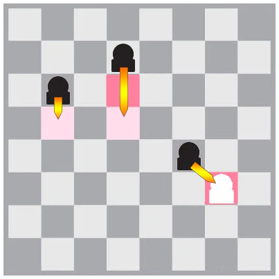
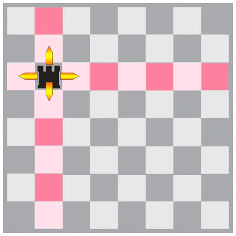
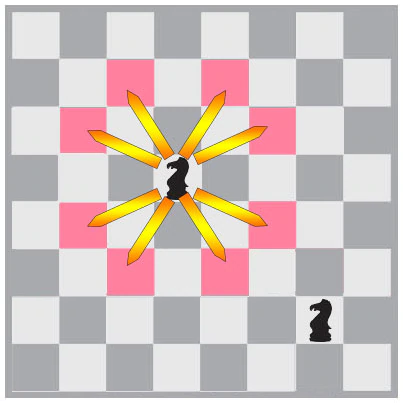
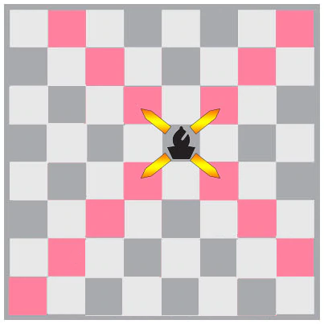
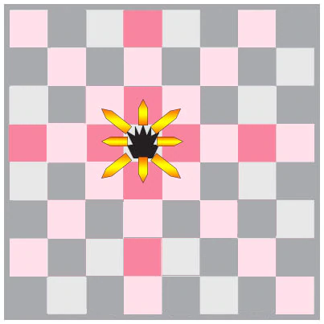
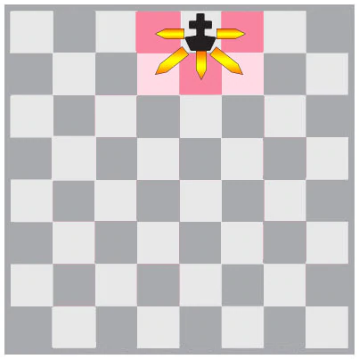

Chess is a game of strategy. A new player would learn how each chess piece moves because they're easy to learn. Shown below, are
the movements of the chess pieces.
Piece Movements
1. The Pawn
The pawn is the most expendable piece in the game but it also has the most potential out of all the others, since it is the only
piece capable of promotion. The pawns can be found in the second row when starting the game
The pawn can move diagonally forward when capturing a piece. It is only 1 point when captured.

1. The Rook
The Rook can only move vertically or horizontally and can be found on the left and right-most side of the first row. It has 5
points when captured.

3. The Knight
The Knight is the most versatile piece in the game. It is found on between the rook and the bishop. It moves in an L position
(2 blocks then 1 block). It also means that if it starts on a white square, it must end on a black square and vice versa.
It has the same points as the Bishop, which is 3.

4. The Bishop
The Bishop's movement is diagonally. It is found beside the King and Queen. It has the same points as the Knight, which is 3.

5. The Queen
The Queen is the most powerful piece in the game and has the most space to move to, as it is a combination of both rook and bishop,
meaning it can move horizontally, vertically, and diagonally. It has 9 points when captured.

6. The King
The King is the most important piece in the game, as it is the decision for a checkmate or a stalemate. A checkmate happens if the
king is under check but can't move to another square, while the condition for a stalemate is the same as checkmate with the
exclusion that the king is under check.
